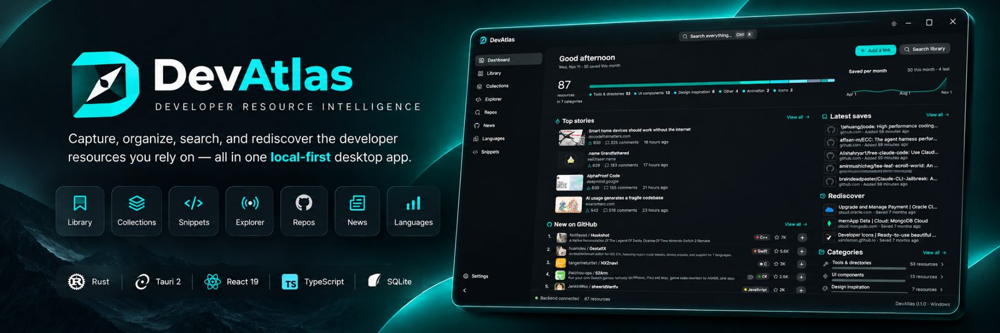

The bookmark manager for developers that your AI coding agents can read
DevAtlas turns your browser bookmarks, GitHub stars and saved links into one searchable library on Windows. Organize them into collections, attach code snippets, discover trending repos, and let Claude Code, Cursor and other agents search it over MCP. Free, open source and local-first: no account, no cloud.

Every developer resource in one place
Reads your browser bookmarks
Brave, Chrome, Edge, Vivaldi, Opera, Opera GX or Firefox, live and read-only. New saves appear in seconds.
Organize GitHub stars
Import up to 1,000 starred repos, then tag, annotate and track their releases and star growth.
Collections and snippets
Group links into collections and attach code snippets to the links they go with.
Search everything
Ctrl K finds links by title, notes and tags, plus collections, snippets and pages.
Discover
Trending new GitHub repos, star history, Hacker News, 35 official dev blogs and TIOBE/PYPL language rankings.
Keep it healthy
A dead-link checker, one-file backups, and imports from any browser's bookmarks export.
MCP server for Claude Code, Cursor, Windsurf and Codex
DevAtlas doubles as a read-only MCP server, so your coding agent answers from the resources you saved instead of guessing. Ask it things like:
- "Which date picker library did I save?"
- "What do I have saved for this project's stack?"
Connect Claude Code with one command (Settings shows your exact path):
claude mcp add devatlas -s user -- "C:\Users\<you>\AppData\Local\Programs\DevAtlas\DevAtlas.exe" --mcp
Agents get three tools: search_library, get_resource and
get_project_stack, which matches a project's package.json, Cargo.toml,
go.mod or Python dependencies against what you've saved. The server opens your library
read-only and nothing leaves your computer.
Download
Get DevAtlas Setup from the latest release. It installs per user with no admin prompt, and updating keeps your library. Windows 10 and 11. Releases aren't code-signed yet, so if SmartScreen warns you, choose More info → Run anyway.
FAQ
What is DevAtlas?
A free, open-source bookmark manager for developers. It brings your browser bookmarks, GitHub stars and saved links into one searchable desktop library on Windows, with collections, snippets, trending repos, developer news and a dead-link checker.
How do I let Claude Code or Cursor use my bookmarks?
DevAtlas includes a read-only MCP (Model Context Protocol) server. Connect it with one command from Settings → AI coding agents, and Claude Code, Cursor, Windsurf or Codex can search your saved links and notes.
How do I organize my GitHub stars?
Import up to 1,000 starred repositories of any GitHub user from Settings. They join your library, where you can tag them, add notes, group them into collections and see their latest release and star growth.
Which browsers does DevAtlas read bookmarks from?
Brave, Chrome (including signed-in account bookmarks), Edge, Vivaldi, Opera, Opera GX and Firefox. Bookmarks are only read, never changed.
Do I need an account? Is my data uploaded anywhere?
No account and no cloud. Your library lives in a local SQLite database on your computer.
Does DevAtlas run on macOS or Linux?
Not yet. DevAtlas is built for Windows 10 and 11. macOS and Linux builds are on the roadmap.